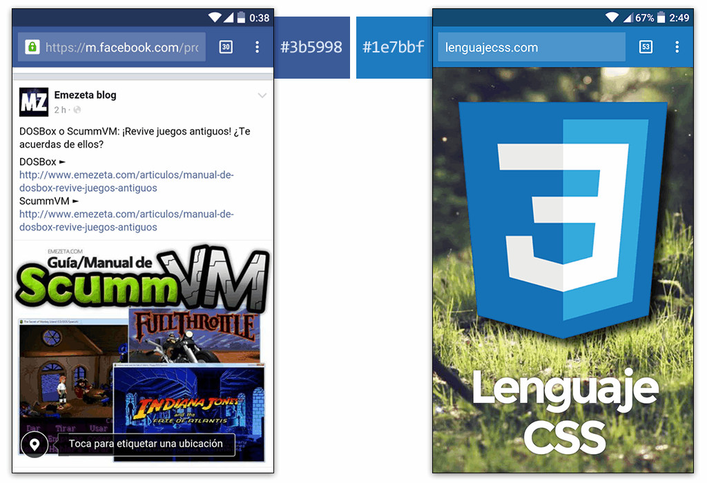

Etiquetas de cabecera¶
Etiquetas HTML de relación¶
Habíamos mencionado que la estructura de un documento HTML debía contener siempre dos etiquetas HTML principales: la cabecera de la página o <head> y el cuerpo de la página o <body> . El primero de ellos, del que hablaremos en este apartado, se encarga de contener etiquetas de metadatos (información sobre el documento) así como establecer relaciones con otros documentos. El segundo de ellos, se encarga de la parte visual que verá el usuario en el navegador.
Cabecera del documento¶
Existen varias etiquetas que se suelen utilizar en esta sección de cabecera del documento:
| Etiqueta | Atributos | Descripción |
|---|---|---|
<title> |
Título de la página (pestaña o título del navegador o en buscadores). | |
<base> |
href, target |
URL base del documento (usado para gestionar rutas relativas). |
<link> |
href, hreflang, rel, media, type |
Establece una relación del documento actual con otro externo. |
<meta> |
name, content, http-equiv, charset |
Establece un metadato específico en el documento actual. |
<style> |
media, type |
Crea estilos CSS que afectarán únicamente al documento actual. |
<script> |
src, type, charset, async, defer |
Indica un script a cargar o ejecutar en la página actual. |
Existe dos etiquetas que tradicionalmente solían incluirse en la cabecera de un documento HTML. Sin embargo, actualmente también pueden utilizarse en el cuerpo de la página. Hablamos de las etiquetas <style> y <script>.
- La etiqueta
<style>sirve para incluir estilos CSS en la propia página HTML. - La etiqueta
<script>sirve para incluir código Javascript en la propia página HTML (o de forma externa), pero tiene una explicación mucho más extensa y la retomaremos más adelante.
Título y codificación¶
En el interior de la etiqueta <head> es aconsejable, como mínimo, indicar siempre las siguientes dos etiquetas:
<head>
<title>Título del documento</title>
<meta charset="utf-8" />
</head>
En este ejemplo, la etiqueta <meta> indica que el navegador utilice la codificación UTF-8 para mostrar el texto. Es muy importante utilizar siempre de forma coherente una misma codificación en todos nuestros documentos, de esta forma evitaremos problemas con vocales acentuadas, o carácteres como ñ , ¿ , ¡ u otros.
Para evitar este tipo de problemas, se recomienda siempre realizar los siguientes pasos:
- Utilizar la etiqueta
<meta charset="utf-8">en la cabecera del documento. - Guarda el archivo HTML con codificación UTF-8 en las opciones del editor que utilicemos.
- Si aún tenemos problemas de codificación, revisar la configuración del servidor web (server-side).
De esta forma reducimos la probabilidad de tener problemas de este tipo.
Otros documentos¶
Como habíamos comentado, la etiqueta <link> permite establecer relaciones con otros documentos. De esta forma, el navegador o cualquier sistema capaz de leer código web puede saber que un documento HTML está relacionado con otro documento (independientemente del formato que sea) y así relacionarse entre ellos.
Veamos algunos ejemplos de relaciones que podemos establecer.
Versiones alternativas¶
Con el valor alternate en el atributo rel de la etiqueta <link> podemos indicar que el documento actual tiene versiones alternativas en otros formatos o idiomas. El siguiente ejemplo indica que el documento HTML que estamos leyendo tiene una versión en PDF, y además, una versión HTML en inglés:
<head>
<link rel="alternate" href="document.pdf" type="application/pdf" />
<link rel="alternate" href="document-en.html" hreflang="en" />
</head>
Referencias a datos¶
El atributo rel también nos permite indicar el tipo de relación que tiene el documento referenciado. Por ejemplo, a continuación indicamos una referencia al autor del documento, a la zona de ayuda, la zona de búsqueda y la licencia que cubre el contenido de la página:
<head>
<link rel="author" href="http://twitter.com/Manz" />
<link rel="help" href="http://lenguajehtml.com/ayuda/" />
<link rel="search" href="http://lenguajehtml.com/busqueda/" />
<link rel="license" href="http://lenguajehtml.com/licencia/" />
</head>
Favicon (icono de pestañas)¶
Cuando tenemos varias pestañas en nuestro navegador, para una búsqueda más fácil e intuitiva entre pestañas, el navegador suele colocarnos unos iconos a la izquierda del título de las pestañas. Estos iconos son conocidos como favicons (iconos de favoritos) ya que fue un invento de Internet Explorer para colocar el icono cuando el usuario añadía una página a favoritos:
<head>
<link rel="shortcut icon" href="/favicon.ico" /> <!-- HTML4 -->
<link rel="icon" sizes="64x64" href="/favicon.png" /> <!-- HTML5 -->
<link rel="apple-touch-icon" sizes="180x180"
href="/apple-touch-icon-180x180.png" /> <!-- iPhone/iPad -->
<meta name="msapplication-TileImage"
content="/mstile-144x144.png" /> <!-- Windows Phone -->
</head>
Desgraciadamente, esta característica no está definida en la especificación, por lo que cada navegador (¡y cada sistema operativo!) la implementa como quiere. Hay navegadores que sólo soportan favicon en formato PNG, otros que solo soportan resoluciones específicas, etc.
!!!
Para generar los favicons de una forma más cómoda, aconsejo utilizar la herramienta Real Favicon Generator, a la cuál le pasamos un logo a alta resolución y nos generará un .zip con el código y diferentes versiones y resoluciones de los iconos.
Posicionamiento (Google)¶
La etiqueta <link> también nos permite indicar algunos datos interesantes de cara al buscador para evitar ser marcado como contenido duplicado o indicarle al buscador exactamente las URLs que debe tener en cuenta. Para ello, podemos utilizar los siguientes atributos:
| Atributo rel | Atributo href | Significado |
|---|---|---|
canonicalDirección URL |
URL exacta que Google debería asociar al documento actual en el buscador. | |
prev |
Dirección URL | Si el documento actual tiene varias partes, indica la URL de la página anterior. |
next |
Dirección URL | Si el documento actual tiene varias partes, indica la URL de la página siguiente. |
Estilos CSS de documento¶
Por último, otra de las funciones más conocidas y utilizadas de la etiqueta <link> es la de establecer una relación con un documento CSS para aplicar estilos a la página HTML actual (y a todas las que establezcan una relación a ella).
Para ello, no hay más que utilizar el valor stylesheet en el atributo rel de la siguiente forma:
<head>
<link rel="stylesheet" href="index.css" type="text/css" />
</head>
Con esto, el documento HTML estará relacionado con el documento CSS index.css , y aplicará todos los estilos CSS que se encuentren en él. El atributo type es opcional y no se suele indicar, puesto que el tipo por defecto de las hojas de estilos ya es text/css.
Etiquetas HTML de metadatos¶
Quizás, la etiqueta con mayor número de posibilidades en la cabecera de un documento HTML es la etiqueta <meta>. En ella, y a través de los atributos name y content podemos indicar una gran cantidad de metadatos al documento. Veamos los más conocidos:
Atributo name | Atributo content |Descripción
description|texto|Indica la descripción de la página que aparece en buscadores.
keywords|palabras clave|Lista de palabras clave separadas por comas. Google no la tiene en cuenta.
author|nombre|Indica el nombre del autor de la página.
language|idioma|Código ISO 639-1 del idioma del documento HTML.
generator|software|Indica el software utilizado para crear la página web.
theme-color|color|Color en formato hexadecimal de la barra de navegación del navegador.
viewport|parámetros|Comportamiento de la región visible del navegador. Ver Responsive.
Tema de color del navegador¶
Un cambio muy reciente, incluído por parte de Google en Google Chrome y dispositivos Android, es el atributo theme-color que colorea la barra de direcciones del navegador:
<head>
<meta name="theme-color" content="#1e7bbf" />
</head>
Con esto conseguiremos que, un dispositivo móvil con Android y Google Chrome, muestre la barra de navegación de la siguiente forma:

Metadatos para Google¶
Al margen de etiquetas <meta> como description o <title>, que las entiende y procesa perfectamente para crear los resultados de búsqueda, Google es capaz de leer otros metadatos que le indicarán como realizar ciertas acciones:
| Atributo name | Atributo content | Descripción |
|---|---|---|
google |
nositelinkssearchbox |
Indica a Google que no muestre el minibuscador en los sitelinks. |
google |
notranslate |
Indica a Google que no debe traducir la página. |
robots |
parámetros | Indica al robot de un buscador si debe indexar o no la página. |
Un pequeño ejemplo de esta etiqueta con los citados atributos:
<head>
<meta name="google" content="nositelinkssearchbox" />
<meta name="google" content="notranslate" />
<meta name="robots" content="index, nofollow" />
</head>
Por su parte, la etiqueta <meta name="robots"> puede tener varios parámetros (separados por comas) para indicarle a Google diferentes detalles:
| Parámetros | Significado |
|---|---|
index |
Sugiere a Google que se quiere indexar el contenido de la página en el buscador. |
noindex |
Indica a Google que no debe indexar el contenido de la página en el buscador. |
follow |
Sugiere a Google que siga los enlaces que encuentre en la página. |
nofollow |
Indica a Google que no debe seguir los enlaces que encuentre en la página. |
nosnippet |
Indica a Google que no muestre fragmentos (descripción, etc...). |
noodp |
Indica a Google que no use la descripción alternativa de DMOZ. |
noarchive |
Indica a Google que no almacene una versión en caché de la página. |
unavailable_after fecha |
Establece una fecha de caducidad para que no se rastree más la página. |
noimageindex |
Indica a Google que no indexe la página en resultados de Google Imágenes. |
none |
Equivalente a indicar los parámetros noindex, nofollow. |
Metadatos de cabeceras¶
Existe una serie de metadatos especiales que indican a los robots del buscador o al navegador, que deben modificar las cabeceras HTTP para realizar acciones que suelen hacerse desde el lado del servidor. Para ello, en lugar de utilizar el atributo name, utilizamos el atributo http-equiv. Sin embargo, estas etiquetas pueden ser ignoradas por algunos navegadores o robots de búsqueda y se utilizan por motivos históricos.
Algunos ejemplos de estos atributos son los siguientes:
| Atributo http-equiv | Atributo content | Descripción |
|---|---|---|
refresh |
segundos;url=URL |
Redirige a la URL después del número de segundos indicado. |
expires |
fecha | Fecha a partir de la cuál se considera página expirada. |
pragma |
no-cache |
Indica al navegador que no guarde en caché la página. |
cache-control |
public | private |
no-cache |
Indica a Internet Explorer si guardar o no en caché la página.
Y finalmente, un ejemplo aplicando cada una de estas etiquetas:
<head>
<meta http-equiv="refresh" content="300;url=http://www.emezeta.com/" />
<meta http-equiv="expires" content="Fri, 29 Apr 2016 12:56:00 GMT" />
<meta http-equiv="pragma" content="no-cache" />
<meta http-equiv="cache-control" content="no-cache" />
</head>
Etiquetas HTML de redes sociales¶
Al igual que vimos como establecer un título y descripción para un documento HTML, es posible definir una serie de etiquetas de metadatos orientadas a redes sociales como Facebook o Twitter. De esta forma, al margen de los datos del documento HTML, podemos indicar títulos o descripciones diferentes, orientadas al público de cada red social.
Facebook (Open Graph¶
Facebook utiliza Open Graph, un protocolo que permite dotar de metadatos orientados a redes sociales. Al compartir un enlace de una página en Facebook, de forma automática, Facebook analiza el código HTML en busca de metadatos.
Si no los encuentra, se crea sus propios metadatos en base a criterios internos (que podrían ser incorrectos). Por ejemplo, Facebook podría analizar la página y, como no existen metadatos, poner como imagen de presentación del enlace, una imagen de un usuario que comenta, y no la imagen correspondiente al propio artículo. Sin embargo, si tenemos los metadatos sociales de Open Graph especificados, podría aparecer algo parecido a esto:
Con Open Graph podemos personalizar los datos que queremos que se ofrezcan cuando un usuario comparta el enlace en Facebook o lo envíe por un mensaje privado. Un ejemplo básico para páginas genéricas (con título, imagen, descripción y tipo de página) podría ser el siguiente:
<head>
<meta property="og:type" content="article" />
<meta property="og:title" content="Título del post" />
<meta property="og:image" content="http://pagina.com/img/imagen32.jpg" />
<meta property="og:description" content="Descripción de la página" />
</head>
Algunos enlaces interesantes sobre Open Graph:
- Open Graph Debugger: Herramienta de validación de Open Graph que permite comprobar si el código es correcto y no hay ningún error en la utilización del protocolo en nuestro documento HTML.
Twitter (Twitter Cards)¶
Por su parte, Twitter utiliza Twitter Cards, un sistema que permite integrar metadatos para su uso en la red social de Twitter, y enriquecer la información de tweets donde se mencionan o enlazan páginas de nuestro sitio web.
Datos como el formato y tipo de la información mostrada, el nombre del autor de la página del enlace, el título, descripción e imagen de presentación son perfectamente personalizables desde Twitter Cards, que mostraría una apariencia similar a la siguiente:

Para utilizar Twitter Cards se requiere dar de alta previamente en Twitter Developers así como pasar un pequeño proceso de moderación para saber si tu página cumple los requisitos para utilizar este tipo de metadatos en la red de Twitter. Respecto al código a utilizar, es muy sencillo:
<head>
<meta property="twitter:card" content="summary_large_image" />
<meta property="twitter:creator" content="@Manz" />
<meta property="twitter:title" content="Título" />
<meta property="twitter:description" content="Descripción" />
<meta property="twitter:image:src" content="URL_img.jpg" />
</head>
Algunos enlaces interesantes sobre Twitter Cards:
- Twitter Cards Validator: Herramienta de validación de Twitter Cards que permite realizar una comprobación del código de los metadatos de tu página para saber si existen errores.
Fuente: Lenguaje de Html por Manz